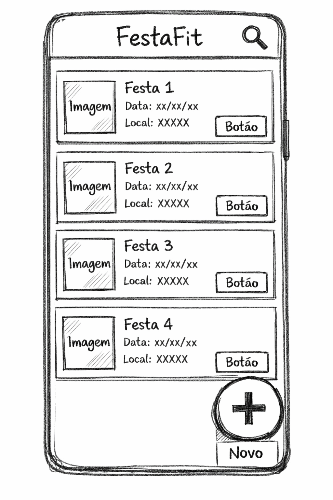
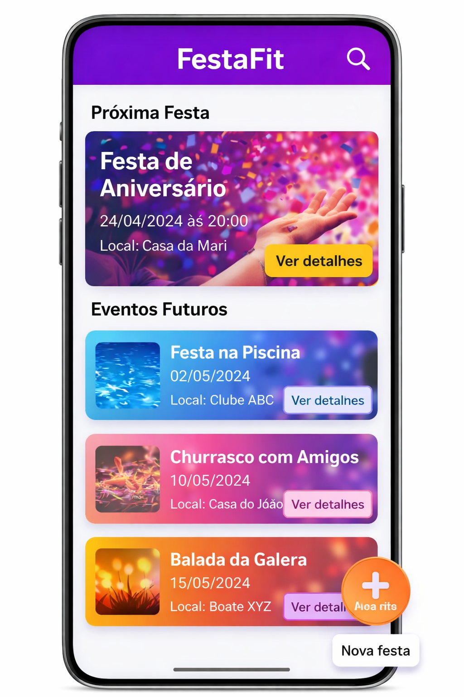
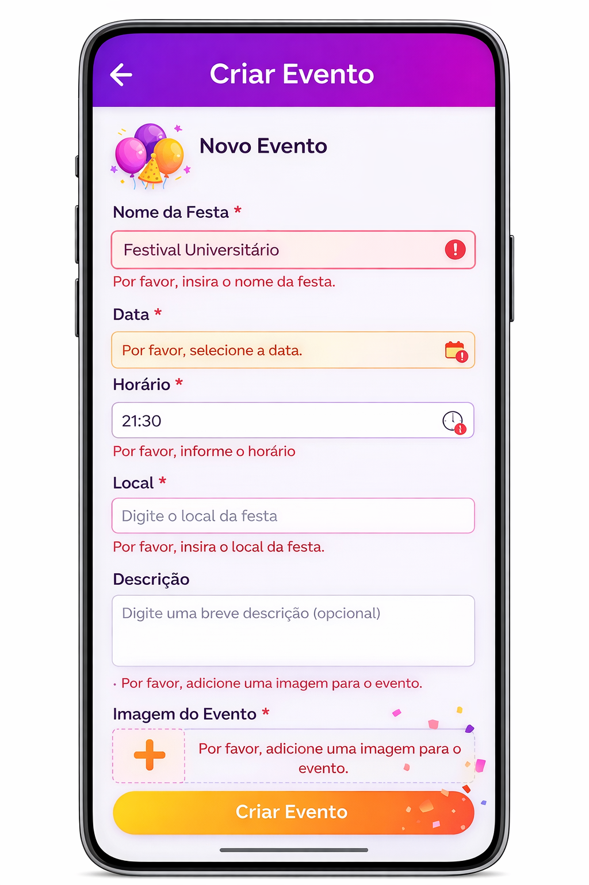

1. O que são diretrizes de design?
Diretrizes de design são orientações que ajudam a tomar decisões mais adequadas durante a criação de interfaces digitais. Elas servem como referência para organizar elementos, definir comportamentos e manter a clareza do sistema.
Em vez de criar cada tela apenas com base em gosto pessoal, usamos princípios consolidados em IHC e UI design. Isso reduz inconsistências e melhora a experiência de quem utiliza o sistema.
2. Consistência e padrões
Um dos princípios mais importantes é a consistência. Isso significa manter padrões de cores, tipografia, ícones, rótulos, tamanhos de botão e comportamento dos componentes ao longo de todas as telas.
Quando o sistema é consistente, a pessoa não precisa reaprender tudo a cada nova tela. Ela reconhece padrões e consegue prever o que vai acontecer, o que reduz erros e aumenta a sensação de controle.
3. Hierarquia visual
Hierarquia visual é a forma como organizamos os elementos para mostrar o que é mais importante. Títulos, subtítulos, textos, cards, botões e ícones devem ajudar o olhar da pessoa a seguir um fluxo lógico de leitura.
Podemos construir essa hierarquia usando tamanho de fonte, peso tipográfico, cor, contraste, espaçamento e agrupamento. Se tudo tem o mesmo peso visual, nada se destaca e a interface parece confusa.
4. Feedback e visibilidade do estado
Interfaces bem projetadas dão feedback sempre que o usuário realiza uma ação: clicar em um botão, enviar um formulário, carregar uma lista ou cometer um erro.
O sistema pode responder com mudanças visuais, mensagens, indicadores de progresso ou animações discretas. O importante é que a pessoa consiga entender o que está acontecendo, evitando dúvidas como “será que funcionou?”.
5. Boas práticas para formulários
Formulários são pontos críticos de interação. Bons formulários têm campos bem rotulados, ordem lógica, mensagens claras de erro e não pedem informações desnecessárias.
- Use rótulos claros e próximos aos campos.
- Evite pedir mais dados do que o necessário para a tarefa.
- Indique claramente quais campos são obrigatórios.
- Mostre mensagens específicas de validação (o que está errado e como corrigir).
- Organize os campos em blocos coerentes (dados pessoais, contato, etc.).
6. Navegação clara e previsível
A navegação ajuda a responder a três perguntas: onde estou, o que posso fazer aqui e como volto. Menus, links, breadcrumbs, títulos de página e botões de retorno devem colaborar para essa percepção.
Nomes vagos de menu, mudanças inesperadas de layout ou caminhos sem saída aumentam a carga cognitiva. Já uma navegação clara apoia a pessoa na busca por informações e na conclusão de tarefas.
7. Prevenção de erros
Diretrizes de design também tratam de prevenir erros, não só de reagir a eles. Isso inclui confirmar ações críticas, limitar entradas inválidas, oferecer escolhas guiadas e deixar claras as consequências de cada ação.
Desfazer (undo), confirmar exclusões importantes e restringir formatos de dados são estratégias que reduzem frustrações e danos.
8. Clareza e carga cognitiva
Uma interface pode ser visualmente bonita e, ainda assim, cansativa ou confusa. A clareza depende de linguagem simples, organização em blocos, quantidade adequada de informação por tela e bom uso de espaço em branco.
Quanto menos esforço a pessoa gasta para entender a interface, mais energia sobra para se concentrar na tarefa principal.
9. Relação com usabilidade e UX
Diretrizes e regras de design estão diretamente ligadas à usabilidade, porque tornam a interação mais fácil de aprender, eficiente e menos propensa a erros.
Ao mesmo tempo, elas impactam a experiência do usuário (UX) como um todo, pois contribuem para sentimentos de confiança, fluidez e satisfação ao interagir com o sistema.
10. Sugestão de estudo
Nos próximos dias, observe interfaces do cotidiano e tente identificar exemplos de boa e má aplicação dessas diretrizes: consistência, hierarquia visual, feedback, prevenção de erros e clareza na navegação. Traga pelo menos um exemplo para comentarmos em sala.
11. Exemplo prático: aplicativo para organizar festas de república
Imagine que você foi convidada(o) para projetar a interface do “FestaFit”, um aplicativo usado por estudantes para organizar festas no campus. O app deve ajudar a: listar eventos, controlar limite de pessoas, combinar quem leva o quê e evitar confusões com horário, endereço e regras de convivência.
Vamos ver como as diretrizes e regras de design podem orientar o passo a passo da criação dessa interface, desde a tela inicial até o formulário de criação de eventos.
As tarefas principais são: ver festas disponíveis, confirmar presença e criar uma nova festa. Isso significa que a tela inicial precisa destacar claramente essas ações, sem poluir com opções secundárias.

Imagem criada pelo ChatGPT.Para manter consistência, definimos um padrão: cards de eventos sempre mostram nome da festa, data, horário e status (vagas cheias ou disponíveis) na mesma ordem. O botão de ação principal usa sempre a mesma cor e texto curto, como “Confirmar presença”.
A hierarquia visual destaca o próximo evento da noite em um card maior no topo, enquanto as festas futuras aparecem em cards menores abaixo, com menos destaque.

Imagem criada pelo ChatGPT.Ao criar uma nova festa, o formulário de “Criar evento” pede apenas o essencial: nome, data, horário, localização e limite de pessoas. Campos obrigatórios são marcados, e mensagens de erro explicam claramente o problema (“informe uma data futura” em vez de “erro no campo”).
Para prevenir erros, o app sugere horários que não chocam com outras festas já criadas e avisa se o limite de pessoas for menor do que o número de convidados já confirmados.

Imagem criada pelo ChatGPT.Depois de criar a festa, o app mostra uma mensagem de sucesso (“Festa criada com sucesso!”) e oferece duas ações imediatas: “Compartilhar convite” e “Ver detalhes da festa”. O usuário entende que a ação deu certo e sabe qual é o próximo passo.
Na navegação, a barra inferior traz apenas três seções: “Festas”, “Minhas festas” e “Perfil”. Isso mantém a estrutura simples, previsível e fácil de memorizar.
Imagem criada pelo ChatGPT.Ao longo desse exemplo, cada decisão de interface foi guiada por diretrizes: priorizar tarefas principais, manter consistência, criar hierarquia visual, fornecer feedback claro, planejar bons formulários e prevenir erros. Esses mesmos passos podem ser adaptados para outros contextos de software, além das festas de república.
12. Materiais de apoio
A lista a seguir reúne materiais introdutórios e referências de UI/UX para aprofundar os conceitos apresentados neste tópico.
-
Adobe XD Ideas – artigos curtos sobre UI/UX, com exemplos de layouts,
hierarquia visual, prototipagem e design systems aplicados a interfaces.
https://xd.adobe.com/ideas/ -
Adobe · UX Design – ponto de partida da Adobe para UX, com conceitos
básicos, tutoriais introdutórios e dicas de fluxo, wireframes e protótipos em XD.
https://www.adobe.com/br/products/xd/learn/ux-design.html -
Nielsen Norman Group – site clássico de usabilidade, com heurísticas,
pesquisas, artigos aprofundados e cursos sobre UX, testes com usuários e IHC.
https://www.nngroup.com/ -
Material Design 3 – guidelines do Google com princípios, componentes
e exemplos de layout, cores, tipografia e navegação para apps e web.
https://m3.material.io/ -
Apple Human Interface Guidelines – conjunto de princípios e recomendações
de design visual e de interação para apps em iOS, iPadOS, macOS e outras plataformas Apple.
https://developer.apple.com/design/human-interface-guidelines/ -
Laws of UX – coleção de leis e princípios de psicologia aplicados ao
design de interfaces, com explicações visuais, exemplos e sugestões de uso na prática.
https://lawsofux.com/